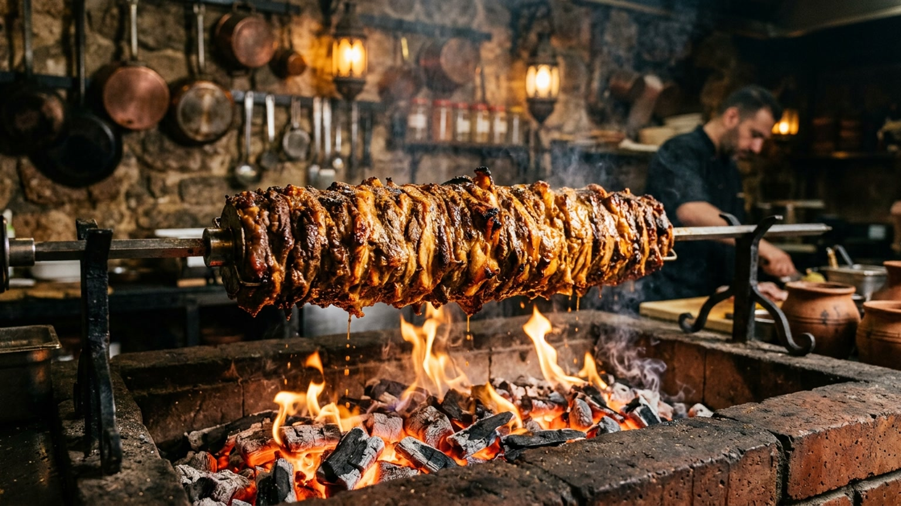

الجودة أولًا
لا نتهاون أبدًا في طزاجة وجودة مكوناتنا. نكهة أصيلة.

نحن لسنا مجرد مطعم، نحن رواد الشواء على اللهب. باستخدام "الصاج" التقليدي، نضمن شواء اللحوم ببراعة فائقة تحافظ على طراوتها وتمنحها تلك الرائحة المدخنة المميزة التي لا تأتي إلا من الشواء بدرجات حرارة عالية. من سندوتشاتنا المبتكرة إلى أطباقنا المختارة بعناية، نحرص على اختيار أجود المكونات المحلية وتحضيرها طازجة يوميًا.
في الصاج المشوي، نؤمن بأن الطعام الرائع يبدأ بالنار، والحديد، والشغف. تأسست قصتنا في قلب نجران بمهمة بسيطة: تقديم المذاق الأصيل للشواء التقليدي على الصاج بلمسة عصرية. نحن متخصصون في مزيج التراث مع النكهة الغنية، لنضمن أن كل لقمة تحكي قصة من الجودة والإتقان.
لا نتهاون أبدًا في طزاجة وجودة مكوناتنا. نكهة أصيلة.
تتبيلاتنا السرية وتقنياتنا التقليدية هي جوهر مطبخنا.
سواء كنت تتناول الطعام لدينا أو تطلب عبر تطبيقنا، نضمن لك تجربة سلسة من المطعم إلى باب منزلك.
أن نكون الوجهة الرائدة لأطباق الشواء على الصاج في المنطقة، متميزين بالتزامنا بالنكهات التقليدية وابتكارنا في تقديم الخدمة.
نقوم بتأمين اللحوم والخضروات يوميًا من موردين محليين في نجران لضمان طزاجة كل وجبة. نعتمد الجودة الخالصة فقط.
تقنية الشواء على الصاج بحرارة عالية تضمن حبس النكهة في الداخل مع منحها الرائحة المدخنة الأصيلة التي لا يمكن للشوايات الحديثة محاكاتها.
تجاوز وقت الانتظار من خلال تطبيقنا المخصص. من التتبع الفوري للطلب إلى العروض الحصرية لمستخدمي التطبيق، نوفر لك وجبتك المفضلة عند باب منزلك بلمسات بسيطة.
صحتك هي أولويتنا. يتبع مطبخنا بروتوكولات سلامة الغذاء والمعايير الصحية العالمية الصارمة، مما يضمن بيئة نظيفة وآمنة لتحضير طعامك.
«والله كني طالب سندويتش بطاطس و ضاف عليها شوي شاورما»
«اكل مره لذيذ وانصح بتجربه وعمال المطعم جدا راقيين وبخاصه واحد يمني ماعرفت اسمه»
«من افضل المطاعم في نجران الصاج المشوي. أكلهم. كويس ممتاز. الطعم لذيذ أنصحكم تجربو استمررو.»